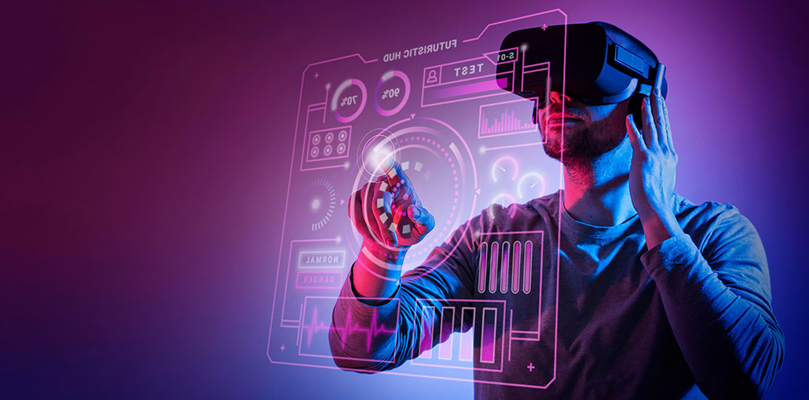

Taking Technology From Academic Theory To Commercial Reality
Last Updated: April 7, 2022
Ultrahaptics has created a technology that allows people to feel virtual shapes, objects, and controls in mid-air.No gloves or handheld controllers are needed – the technology, which we call mid-air haptics, uses ultrasound to project tactile sensations directly onto a user’s hands.
Ultrahaptics has a team of almost 100 people split between offices in California, Germany, South Korea and our headquarters in the Bristol Temple Quarter Enterprise Zone.
All this has been achieved in slightly over four years. It shows just how far and how fast local companies like Ultrahaptics can go with the right tech, the right team and the right support from organizations such as SETsquared, InnovateUK and Horizon2020.None of this, however, could have happened without the original scientific breakthrough by Dr Tom Carter, Dr Ben Long and Professor Sri Subramanian at the University of Bristol.
Within a year of launching our Academic Program, they are now connected with 50 universities including MIT and Stanford, as well as many local institutions and organizations such as Bristol, Bath, Bournemouth, UWE, and Cardiff universities, the Bristol Robotics Laboratory, the Pervasive Media Studio, and the Digital Cultures Research Centre.There are two sides to innovation, industrial and academic, and the right type of collaboration is key.